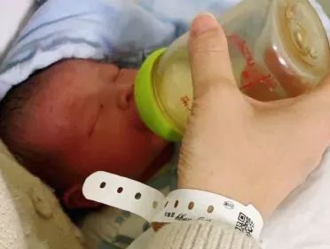

肺炎时期的“生门”故事
原文链接 备份链接 ********** *****没有一个准确的数据，说明现在武汉有多少正在准备分娩的孕妇，但她们的生活被这场疫情彻底打乱了。***** 2月1日，在入住武汉一家新型肺炎特殊病人定点医院的第二天，龚林顺产一个7.1斤男 …

没有一个准确的数据，说明现在武汉有多少正在准备分娩的孕妇，但她们的生活被这场疫情彻底打乱了。
全文3588字，阅读约需7分钟

▲2月1日，在入住武汉一家新型肺炎特殊病人定点医院的第二天，龚林顺产一个7.1斤男婴，母子状态很好。受访者供图
新京报记者 解蕾 祖一飞 编辑 胡杰 校对 杨许丽
也许，长大以后，这个7.1斤的男婴都难以理解，2020年的时候他来到世间有多波折。
2月1日，他的妈妈在湖北武汉顺利分娩。此前，他的奶奶和爸爸先后确认感染了新型肺炎。被收治后，妈妈也被确诊为新型肺炎。
这位出生仅两天的男婴目前各项指标正常，由单独育婴房看护，他的妈妈龚林在医院隔离治疗中。
肺炎疫情下的武汉，像龚林这样的孕产妇生育问题一度困扰着不少家庭……她们面临着怎样的困境？疫情如何改变她们的生活？
━━━━━
有一张床位感觉像中了五百万彩票
龚林和丈夫张立去年来到武汉定居。2019年5月，龚林怀上了二胎。临盆在即，全家人都在盼着小宝宝出生。
在肺炎疫情之前，夫妻二人都很少出门。大年初二，丈夫第一个开始有反应，起初是鼻塞、咳嗽，测了体温，37.1℃，随即让全家人检测体温，婆婆的体温已经达到了38.1℃，这才发现，有可能是染上了新型肺炎。
在丈夫和婆婆隔离三天后，孕期38周+3的龚林也开始出现了鼻塞流涕、腹泻、畏寒、发烧等症状。
“家里已经有两个新型状病毒感染者，我应该也是感染了。”龚林有一种不祥的预感。
看到即将临盆的妻子可能也染上了肺炎，张立打了整整一天的电话，联系了武汉市多家定点医院，被告知如果患有轻微症状，建议不要来医院。他们查到在武汉防控指挥部公布的文件里，有四家医院可以接收孕妇，其中两家在蔡甸区，离家很远。武汉交通停滞，自己家里又没有车，他们又联系社区。社区反馈说为了安全起见，社区的派车不能接送发热病人，只能上报，等待安排。
在打了很多求助电话后，在古田区工作人员的帮忙下叫到了一辆救护车，把他们送到了武汉市中心医院后湖院区。但后湖院区当时也没有床位了，产房还在改建中，没办法接收孕妇。而且医院只能做抽血和拍CT，没法做核酸试剂的检测。
“普通门诊不接待发热孕妇，发热门诊只能做血常规，判断不了是否被感染，拍CT对孕妇来说不安全，也没有核酸试剂可以用。政府指定的定点医院，电话都联系过，也不接收孕妇。陷入了一个“死循环””，张立说。

▲1月30日夜里，在一家定点医院做完检查，龚林坐在医院门口，等着丈夫找回家的车。
在龚林一家苦苦奔波的同时，刘玉亭一家也在四处求医。预产期2月12日的她，在1月27日确诊了新型肺炎。
医生建议，必须尽快解决产妇的问题，否则对胎儿的心跳会有很大影响。刘玉亭家人打120叫来省妇幼保健院的救护车，送到医院，被告知无法收治受感染的产妇。他们逐个联系政府指定名单上的4家定点医院，等来的消息却依旧是——没有床位或者防护用品短缺以致无法接收病人。
刘玉亭的姐姐感慨：“有一张床位感觉就像中了五百万彩票一样。”
“在疫情特殊时期，我们知道各个单位也是超负荷运转。但是特别希望能给我们发热孕妇这种特殊群体，一个专门的渠道来就诊。”龚林对新京报记者说。

▲产妇刘玉亭的核酸试剂检测报告。受访者供图
━━━━━
志愿服务组织在行动
没有一个准确的数据，说明现在武汉有多少正在准备分娩的孕妇，但她们的生活被这场疫情彻底打乱了。
志愿者海豚是一家儿童公益机构的负责人，1月23日，她意识到武汉孕产妇群体亟需帮助后，加入了志愿者工作群。当天，群里出现许多武汉孕妇的求助信息：医院人多，害怕交叉感染；定点医院床位紧张，无法接收孕妇；“封城”造成交通不便，临产时找不到车接送至医院……
1 月 26 日，海豚和同事组建了“武汉留守孕妈”微信群，没多久就有 200 多位武汉孕妇加入，其中大约四分之一的孕妇将在一个月内临产。由于出行不便且面临着各种现实问题，这群“准妈妈”把希望放在了志愿者身上。
海豚介绍，通过网络求助等渠道对接上需要帮助的孕产妇后，志愿者首先会进行筛查分类，根据预产期时间、是否发热、确诊感染等情况，向孕产妇提供对应的帮助。
在大群里，孕产妇可以聊天、互相交流经验，有什么问题就找群里的专业医生解答。如果是预产期很近或已经高危的产妇，志愿者团队会组建小群，安排专业的妇产科医生、护士去提供指导，同时也会有社工提供心理支持，做情绪上的安抚。
海豚说，志愿者团队会了解孕产妇的具体病症，掌握检查报告、是否做核酸检测等信息。如遇需要就医的，会帮忙联系社区、医院等等，提前确认孕产妇是否可以去做检测、能否得到收治。鉴于孕产妇和家属没有精力去逐一了解医院的情况，团队每天会安排专门的志愿者去做这方面的工作。通过电话询问排查，核实哪些医院可以做产检，哪些医院可以接生，并且有空余的产房。
关键的细节也要问到，例如医院在接诊时是否会对普通孕妇和受感染的孕妇作不同处理，否则孕妇到了医院也会面临很大风险。由于每天情况都在变化，志愿者们需要不停地核实更新。
在交流的过程中，志愿者们发现孕产妇往往表现得很焦虑，原因是她们有很多问题在担心，她们不知道去哪里产检更安全，去哪家医院可以生产，甚至连有没有车去医院也要考虑。
武汉交通停摆后，如何前往医院确实困扰着很多孕产妇。通过和当地爱心车队沟通，海豚和志愿者找来四辆车，在孕妇需要生产时可以提供紧急送医服务。截至目前，已经帮助两位受感染的产妇住院生产，另有5位产妇在志愿者的信息支持下自行前往医院。
在实际工作中，海豚也面临一些不知道如何解决的难题。例如有些孕妇被诊断为高度疑似感染，但是没能做核酸检测。如果没得新型肺炎，产妇去定点医院可能受到交叉感染；如果得了，去普通医院又会给医护人员带来风险。志愿者只能把情况反映给政府部门，让对方尽力协调。
海豚认为，当前孕产妇群体最需要解决的问题就是就诊流程上的畅通。政府应当安排一个指定的地方，让孕产妇可以优先做孕检和肺炎检测。如果确诊，要有能就近入住的医院，医院要有产房，有人能接生、照顾产妇。同时也要做好防护工作，做好初筛以防交叉感染。
1月28日，武汉市卫健委曾下发文件，要求指定医院做好产妇等特殊病人的医疗保障工作。逐个联系后，志愿者们发现只有协和医院称可以接，但医院没有病床，防护物资也紧缺，病房改造进展得很慢，最后还是无法接收。
通过和孕妇的接触，海豚发现孕妇们需要的心理支持不单是说一些安慰的话，去开导她们。更重要的是做一些实际的事情，比如说在群里面及时提供信息，安排医生做疑问解答。“别让她们觉得无助，知道有人在帮忙，相对来说就没有那么焦虑。”

▲海豚在朋友圈转发的一对母子的视频。受访者供图
━━━━━
“暂时的分别，是为了更好的爱”
事实上，这个特殊的群体也一直在有关部门的关注之中。
1月28日，武汉市新型肺炎防控指挥部医疗救治组发布文件，要求相关医疗结构做好孕妇等特殊病人的医疗保障工作。
2月1日下午，国家卫健委召开新闻发布会，一个主要议题就是向媒体介绍新型肺炎疫情防控工作中孕产妇、婴幼儿和托育机构的健康防护情况。
北京大学第三医院产科主任赵扬玉在发布会上介绍，已确诊感染新型肺炎的孕产妇抵抗力较低，容易出现一些突发病情，医疗机构在救治时会把孕产妇的生命放在首位。
湖北省妇联也关注到了孕产妇群体。湖北省妇联相关负责人在接受记者采访时表示，湖北妇联和全国妇联都很关心这个群体，会尽其所能为她们提供一些帮助。比如对孕产妇进行孕期护理、孕期检查等相关知识的科普。同时，对于一些求助到妇联的个案也会给予帮助，尽力配合相关部门进行协调。
1月29日，在社区的协调下，刘玉亭终于被一家综合性医院接收，经过两个小时的剖腹产手术，女儿降生，成为全家唯一没有被感染的人。
1月31日，在海豚所在志愿者团队帮助下，龚林入住一家新型肺炎特殊病人定点医院。第二天晚上7点，一个7.1斤的男婴在众人企盼的目光下出生。多少年后，不知他会不会知道，为了来到这个世界，父母曾经经历了多少艰难，又有多少人共同努力过。
2月1日，海豚在朋友圈转发了一对母子的视频。画面中，一个未睁开眼的婴儿躺在母亲身边，哭声响亮。海豚说，这位母亲已经确诊感染新型肺炎，生产后，孩子会被转到有新生儿科的医院，大人则要继续住院治疗。转发时，海豚在朋友圈感慨，“暂时的分别，是为了更好的爱。”
2月2日下午，武汉市新型肺炎防控指挥部发布第10号通告：在前期定点隔离和居家隔离的基础上，对全市经发热门诊诊断有肺炎症状的发热病人和新型肺炎病人的密切接触者，由各区安排车辆分别送至区集中隔离观察点，进行医学观察、治疗或采取其他预防措施。隔离期间，各区免费提供食宿、医学观察和治疗。其他发热病人由社区继续落实居家隔离观察措施。
在观察人士看来，这一措施将会有效缓解发热孕妇在交通、家庭隔离和就医上的难处。
（文中所有受访者均为化名）
点击下图进入”全国新型冠状病毒感染肺炎实时地图“

*值班编辑 李二号 吾彦祖 *


本文部分内容首发自新京报公号“剥洋葱people”
未经新京报书面授权不得转载使用
欢迎朋友圈分享


原文链接 备份链接 ********** *****没有一个准确的数据，说明现在武汉有多少正在准备分娩的孕妇，但她们的生活被这场疫情彻底打乱了。***** 2月1日，在入住武汉一家新型肺炎特殊病人定点医院的第二天，龚林顺产一个7.1斤男 …
原文链接 备份链接 1月25日，是中国鼠年的第一天，也是武汉封城的第3天。非常时期，武汉成了全国人民挂念、祈福的城市。封城后，武汉人民的真实生活是什么样？正和岛自今日起特别推出《叶青：我在武汉疫区的第N天》专栏。叶青是一位定居武汉40年的 …
原文链接 备份链接 武汉某大型医院血液科医生朱洪亮表示，其实这个季节除了新型冠状病毒之外，还有很多如甲流、乙流等病毒流行，这些病毒也会引起发热和肺炎等症状，比较常见。但现在一些发热病人都涌向发热门诊，面对这种压力，武汉的医疗资源是承受不了 …
原文链接 备份链接 “医务人员，有很多做公共工作的（职业），一个人得病以后可能传染很多人。”国家卫健委高级别专家组成员曾光提醒，“所以每个行业都得行动起来，千万别带病工作、带病旅游，这是非常危险的。” 全文4811字，阅读约需8分钟 ▲ …
原文链接 备份链接 这是较早一批感染者之一，发病住院时还没有“新型冠状病毒”的称谓。经历17天隔离治疗，如今痊愈回家 2020年1月11日，工作人员在武汉华南海鲜批发市场西区（主要经营海鲜、水产等）进行检查。图/法新 文 |《财经》记者 …